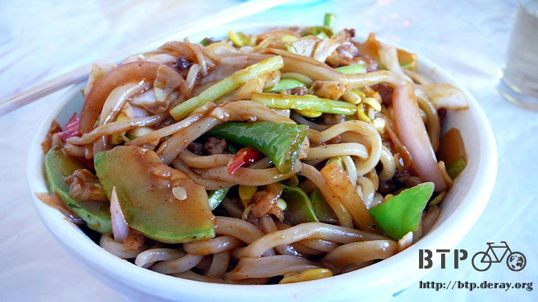
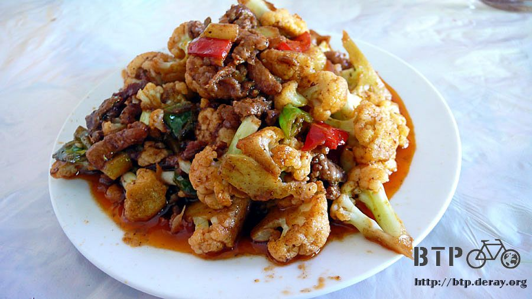
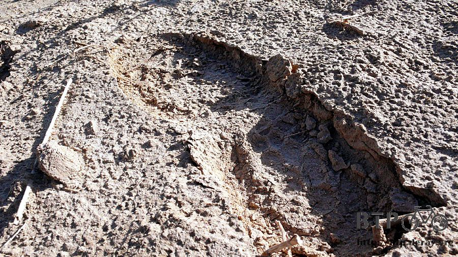
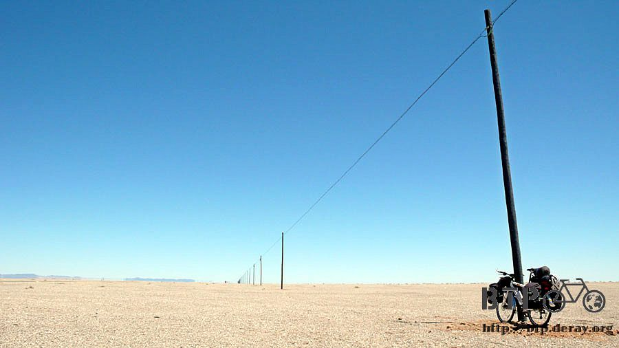
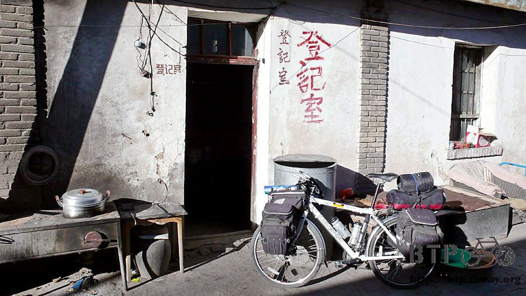
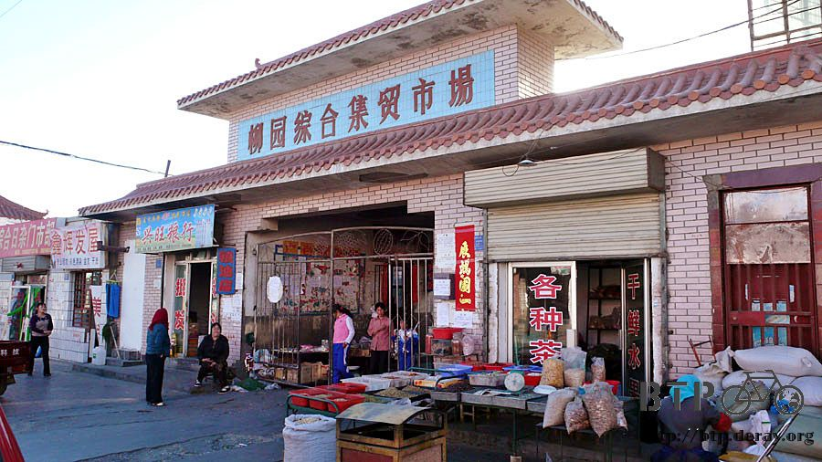
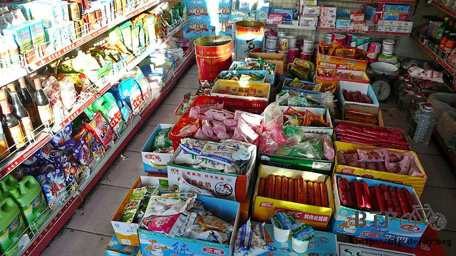

筆直的路
在敦煌待了三天，都是靠雙腳或是搭車在觀光，沒有騎著小多亂跑，所以我跟小多都得到充分的休息。
一大早，收拾有點零散的行李，又買了不少零嘴，尤其都是一些蜜餞類的，得注意保存才不會壞掉。
目前的時區有點混亂，我的手錶依然是台灣時間，也就是+8的時區。
但現在位於甘肅和新疆的交界處，理論上時區應該是+7或是+6比較適當，可是我懶得調整，所以就繼續活在+8的時區中。
重新跨騎在小多身上，感覺真好，好像是另一次旅行出發的感覺。
今天要往北走，目標是距離敦煌130公里左右的柳園鎮，在那過一晚上之後，隔天就要進入新疆了。

不論是看手上這本地圖，還是Google Earth的地圖，今天要騎的215國道，怎麼看都是完美的直線，以北北東的方向筆直前進。

一早出發很涼快，但氣溫有點低，即使太陽出來，溫度依然在20度左右徘徊。
露在手套外的手指頭，凍得有些不聽使喚，奇怪的是兩隻腳丫子，明明穿了襪子又包在鞋子裡，可是一樣好冷好冷。
取暖的方式很簡單，用力踩幾下踏板，騎一小段路之後，身體慢慢就會暖和起來。
早餐沒在敦煌吃，本來想找早餐店，但是都沒看到，等離開敦煌郊區確定前面只剩下荒漠之後，就拿出了餡餅當早餐吃了起來。
一口氣吃掉了全部的餡餅，喝掉一壺水，感覺超撐的>"<太貪嘴了，分兩餐吃都還綽綽有餘，我一餐就吃光了。
實際騎在這條筆直的路上面，其實到也沒那麼神秘，就是沿著沙漠開闢出來的柏油路，恰巧開得很直罷了。
在涼爽的氣溫中哼著歌前進，可以這麼輕鬆的度過那麼多沙漠，都多虧出發的時間比較早，避開了七、八月酷暑的時候進入沙漠。
這一條215國道，連接敦煌和柳園，也是長達一百多公里人煙罕跡，只有在五十公里處有一個小村莊，可以吃飯休息。

因為出發的時間早，前半段路又都是平路很好騎，所以到達這個可以休息的小鎮時才早上十點半。
吃午餐嫌太早了一點，但不吃飯也不知道要幹嘛，所以就找一間餐館點一碗炒麵。
因為想吃點青菜，就請他們再幫我炒一份花椰菜。
等待上桌之前的空檔，就晃晃看這個小鎮有什麼東西可以逛的。
在這裡試吃了很多酥酥脆脆的五穀雜糧，像是綠豆、玉米這些本來硬梆梆的食物，經過烘培之後都變的像是餅乾一樣脆。
不傷牙齒就可以輕鬆的咀嚼來吃，可是味道稍嫌平淡了點，沒有任何的調味，只有原本的豆子味，所以什麼也沒買。

回到餐廳，熱騰騰的美食已經上桌了，炒麵看起來沒有問題，很好吃的樣子。

可是我的花椰菜，本來是想吃清淡的口味，結果炒出來就是一堆紅油、醬油、青紅辣椒的超重鹹口味。
這......連花椰菜都能炒成這樣，整個也吃得太鹹了吧？配著十多杯茶水，總算吃光了所有的食物。

吃飽飯之後，要乖乖的休息半小時以上再騎車，這樣腸胃才不會壞掉。
因為時間還很早，我就坐在店門口當吉祥物，在陰影下昏昏沉沉的睡到中午十二點。
說是中午十二點，但是太陽的位置並非日正當中，一直到下午兩點太陽才在我的正上方。
一路上騎得有一點點無聊，沙漠就是沙漠，柏油路就是柏油路，往前再騎個一兩個小時，景色也絲毫沒有變化。
牽著車到沙漠裡，地上的沙子，表面是硬塊狀的，但是一踩就會崩解，而底下就是沙狀的地形了。

在道路的右邊五十公尺處，和筆直的道路一樣的是筆直排列的電線桿，無止無盡的蔓延下去。
和道路一樣，往前或是往後都看不到盡頭，我發現自己陷入了前後都不著邊的小世界裡，像是前後方都擺著鏡子，無窮的反射和擴張。

遠方的沙漠，看起來都像是湖水一樣，倒映出樹木的樣子，但這些都只是幻覺，
這湖水是不存在的，再怎麼往前騎也都是沙漠，像雙塔水庫那樣的驚奇只能靠緣分了。

今天拍了很多長在沙漠裡的植物，從旅館中裝的開水，石灰質都很重，最底下一定會有白色的粉末沉澱，
所以記得水不要喝光，不然會被那些白白的粉末弄得不停咳嗽，剩下的最後一口水，我就澆在這些努力生長的小植物上頭。

後半段的路終於出現了上坡，今天要從敦煌的海拔1150公尺，爬升到柳園的1750公尺，這點高度其實是小意思。
午後風勢逐漸增強，不硬碰硬的抵抗，降低騎車的速度保持體力，很緩慢的移動在直線的道路上。
這一陣子以來，漸漸的喇叭聲少了許多，而加油的聲音則越來越多，讓我很不好意思，只得頻頻點頭說謝謝。

可能是騎車速度很慢的關係，今天一點都不覺得累，晚上七點到達柳園。
柳園是個礦鎮，不知道產什麼礦產，但是礦工很多，男男女女都有，大家都帶著又大又白的口罩，衣服則髒兮兮，看起來很辛苦。

找到十元的便宜旅店，房間是四人房，但是今天就是我一個人獨享了。


先洗好穿了一天的衣服，然後穿著心愛的藍白拖走在這個小城鎮，很幸運被我發現菜市場，這邊有最濃厚的本地味道，

同時也可以買到很多東西，價錢也都很實惠，左看看右看看，決定買水果吃，好像很久沒有吃水果了。
挑了還沒買過的橘子，選了七、八個秤過重之後是兩斤，只需要少少的五塊錢就可以補充維他命C。

拎著一袋橘子找好吃的餐廳，今天的晚餐是老闆娘推薦的黃燜羊肉。
本來我是點手抓羊肉，因為沒吃過不知道是什麼味道，但是老闆娘說如果我敢吃辣的話，黃燜羊肉比較好吃。
這間餐廳很厲害，每年都得『模範經營者』、『模範個體工商戶』的獎項，牆壁掛得一片都是。
其他客人看到我，就說我是不是今天在215國道上從敦煌騎自行車來的？
因為他們今天在路上開車經過的時候都有看到我，沒想到我就這麼騎到柳園來了。

羊肉吃起來都好軟，比起其它的雞、豬、牛都要軟很多，吃的時候不要想著羊咩咩很可愛，就可以吃得很開心了。
配上白麵皮當作主菜，麵皮雖然沒有醬料，但是沾著羊肉的醬汁就很好吃，看著新聞聯播吃好吃的羊肉，快樂的晚餐時光。
回旅館的路上再去商店買了幾包牛奶、餅乾、蛋捲等零食，反正背包還放得下，我也還騎得動，多買一點沒關係。

剝著橘子當飯後水果，行李中物資充沛令人放心，就算在沙漠中迷路個三天也不會餓肚子，只是會沒水喝罷了/_\
繼續閱讀：5.31 星星峽
中國-人民幣－ 1：4.3 台幣
5.30 |
總計：63.5元 |
午餐炒麵4元、炒花椰菜8元、晚餐黃燜羊肉25元、橘子兩斤5元、花生牛奶三包3元、薄餅兩包5元、蛋捲一包3.5元、住店10元 |
|